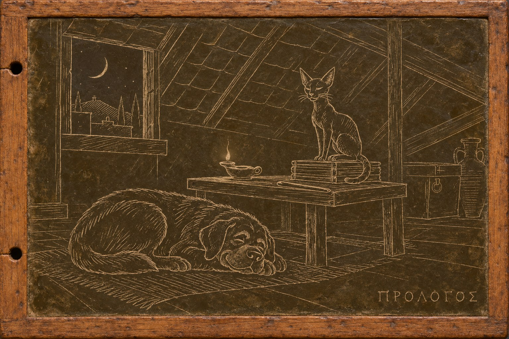

Предисловие

Когда я закончил танский цикл, мне захотелось повторить фокус: взять настоящую эпоху и поменять в ней одну деталь. Повторять себя мне не хотелось. Поэтому здесь нет троих сыщиков, нет торжественной интонации старого судьи, зато есть один изгнанник, большая собака, наглый кот и довольно много иронии. Без неё о третьем веке писать трудно.
Деталь такая: ложная клятва убивает. Кто солгал перед богами, умирает до ближайшего новолуния. Не от яда и не от руки мстителя, а просто потому, что так устроен мир, и каждый ребёнок в Риме это знает. Римляне клялись постоянно: в суде и на рынке, при займе и при вольной, в легионе и перед гением императора. В нашей истории за ложную клятву, насколько известно, боги никого не убивали, и Рим жил с этим вполне спокойно. Мне захотелось посмотреть на Рим, в котором клятва работает.
Оказалось, что такой Рим не честнее нашего. Лгать под присягой там не станет никто, зато всё решает формулировка. Можно поклясться в чистой правде, сказанной так, что она означает совсем другое. Можно не задать вопроса, который следовало задать. Поэтому при каждой серьёзной клятве стоят стражи слов: люди, которые составляют формулы, следят за их произнесением и помнят их наизусть. Писать им не положено. Платон в «Федре» говорит, что буквы годятся для напоминания, а не для памяти, и стражи слов в этом с Платоном согласны. В Риме даже есть поговорка: «Записал — значит, не посмел поклясться».
Мой герой Марк Аврелий Мнесарх был стражем слов, пока однажды не поклялся в том, во что искренне верил. Это оказалось неправдой. Его клятва стоила жизни человеку, которому он был обязан всем. Мнесарх ждал новолуния и смерти, а смерть не пришла. С тех пор он живёт в Субуре, под самой крышей шестиэтажной инсулы, помогает людям не умереть от собственных клятв и записывает чужие кары на восковых табличках. Греки называют такие записи гипомнемами. Отсюда и названия рассказов.
Живёт он не один. С ним молосс Ферокс, что значит «Свирепый», хотя за всю жизнь пёс не оправдал имени ни разу, и египетский кот Пами, который считает себя фараоном. Мнесарх с ними разговаривает, и они ему отвечают. Пёс у меня отвечает за верность и силу, кот за хитрость и мудрость. Слышит ли их кто-нибудь, кроме хозяина, пусть каждый читатель решит сам.
Время действия — с 238 по 251 год, самая середина того, что историки называют кризисом третьего века. Императоры сменяются быстрее, чем на монетах успевают вырезать их профили, и каждый новый требует присяги. В 248 году Рим празднует своё тысячелетие. В 250-м император Деций велит всем жителям империи принести жертву богам и получить об этом свидетельство. Всё это было на самом деле. В мире, где клятва убивает, такие вещи весят гораздо больше. Особенно для тех, кто клясться не может: для иудеев, которые не клянутся чужим богам, и для христиан, которые не клянутся вовсе.
Каждый рассказ — отдельное дело, но читать их лучше по порядку. Где-то к середине я заметил, что почти во всех делах на кону стоят деньги, и стал поднимать ставки. Ближе к концу на кону оказывается такое, что не пересчитаешь ни в сестерциях, ни в жизнях. Последнее слово в цикле принадлежит не Мнесарху. Кому именно, узнаете сами.
Написан цикл во второй половине 2025 года. Римскую историю я проверял как мог. Там, где Рим у меня расходится с настоящим, это сделано нарочно. Там, где это вышло случайно, это моя ошибка, и я буду рад, если мне на неё укажут.
У этого цикла, как у каждого моего цикла, есть своя музыка, главная тема, как у сериала. Плеер стоит в начале каждой гипомнемы. Включите его перед чтением, и Субура зазвучит раньше, чем Мнесарх поднимется к себе под крышу. Если читаете в тишине, просто не нажимайте кнопку, сама музыка не заиграет.
Боги в этой книге иногда карают. Как они это делают и делают ли вообще, вопрос, который мой герой задаёт себе двенадцать лет. Я тоже не знаю ответа. Поэтому и написал.
Павел Юрич, Тбилиси
Тбилиси, октябрь 2026